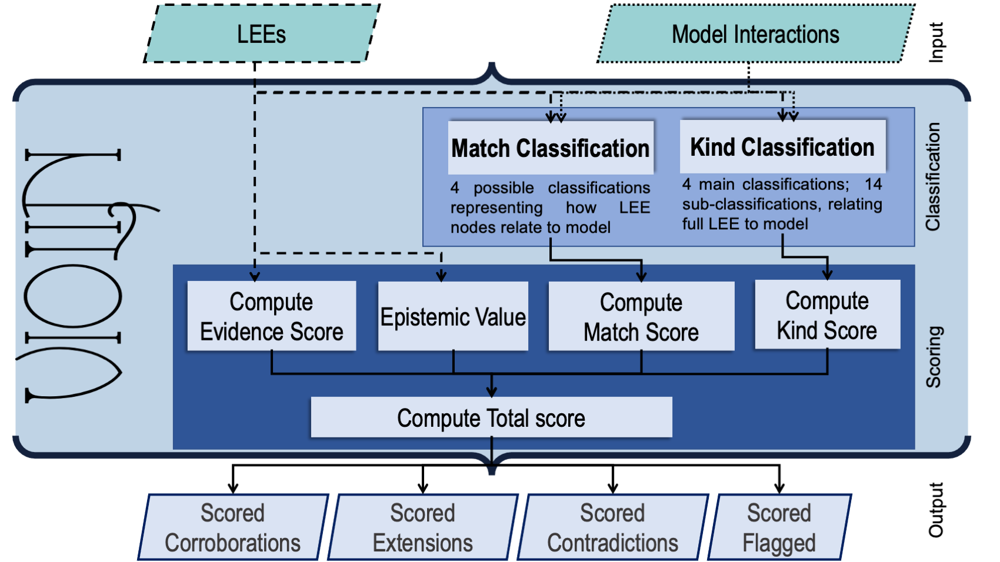
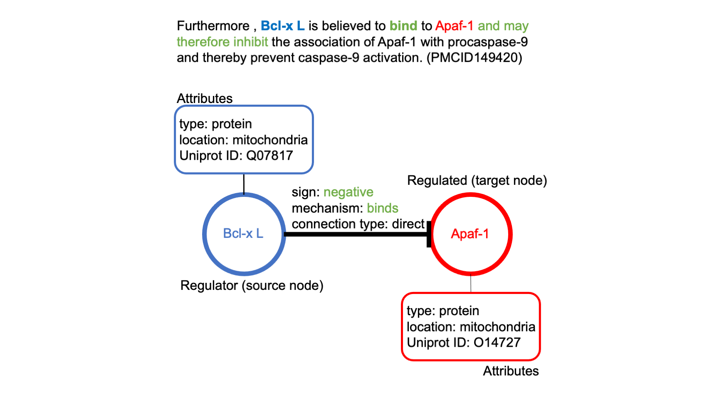

Welcome to VIOLIN’s documentation!¶
VIOLIN (Validating Interactions Of Likely Importance to the Network) is a tool used to automatically classify and judge literature-extracted interactions curated from machine readers by comparing them to existing models. This comparison can help identify key interactions for model extension.
As part of this comparison, VIOLIN assigns multiple numerical values to each literature extracted event (LEE) representing the LEEs relationship to the model. These individual scores cumulate into a Total Score, which can be used to quickly judge how relevant and useful the LEE is to a given model.
VIOLIN Objectives¶
1. To classify reading output, specifically with respect to finding the most useful information for modeling
2. To compare information from the literature to an existing model using multiple metrics at varying levels of detail
To carry out 1. and 2. on incredibly large amounts of machine reading output very quickly
VIOLIN Methodology¶
{kind=link}
VIOLIN takes spreadsheets of formatted machine reading output and static models as input and outputs the scored LEEs, separating them by their primary classification: Corroboration, Contradiction, Extension, or Flagged.
Each biological interaction can be defined by a source node, and target node, and a connecting edge between them. There may also be additional attributes that present additional details. VIOLIN takes advantage of this definiton when making its judgements.
{kind=link}
Contents: